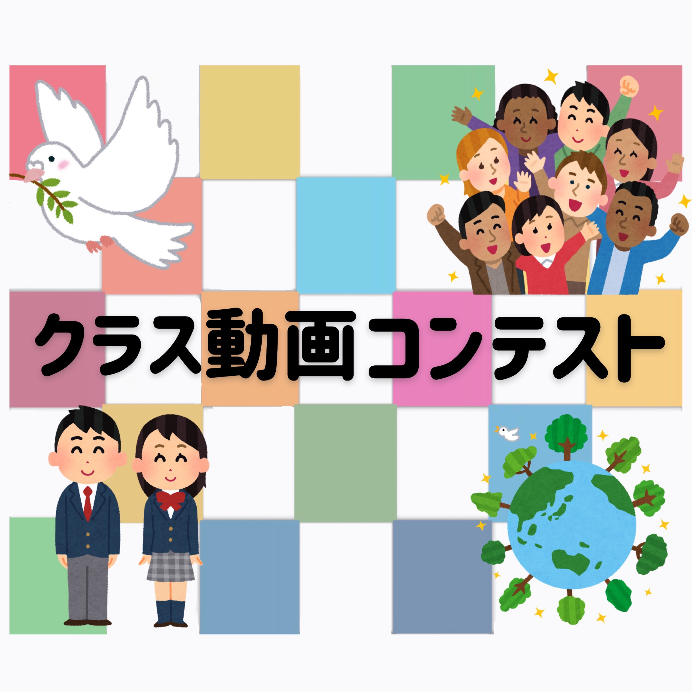
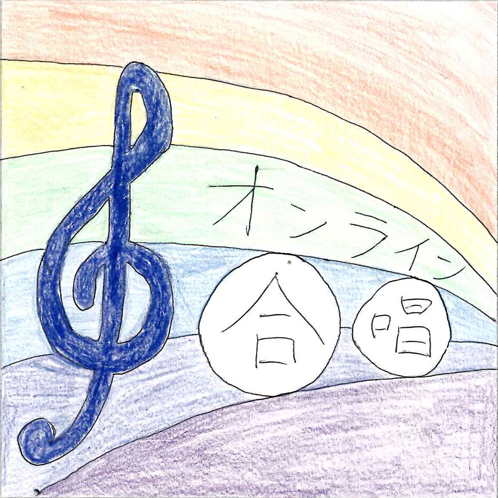
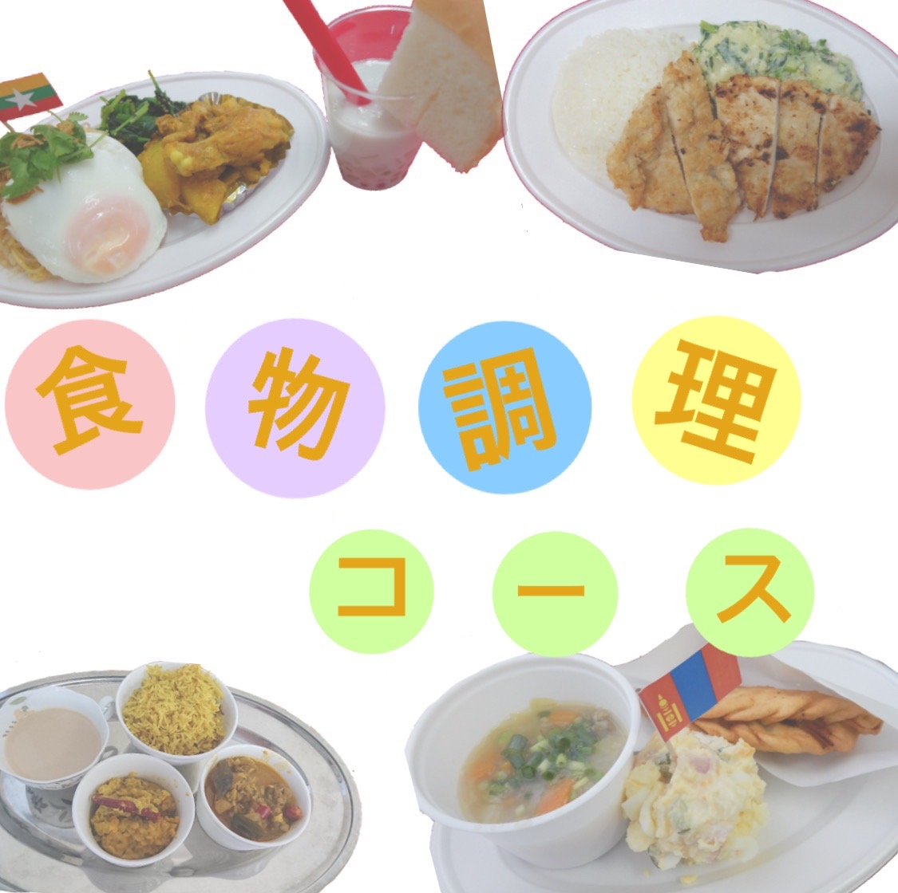
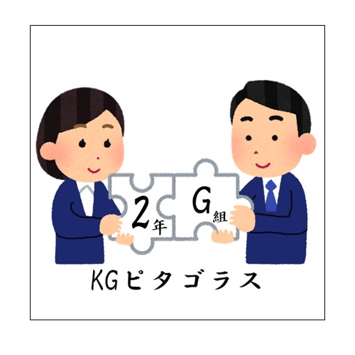
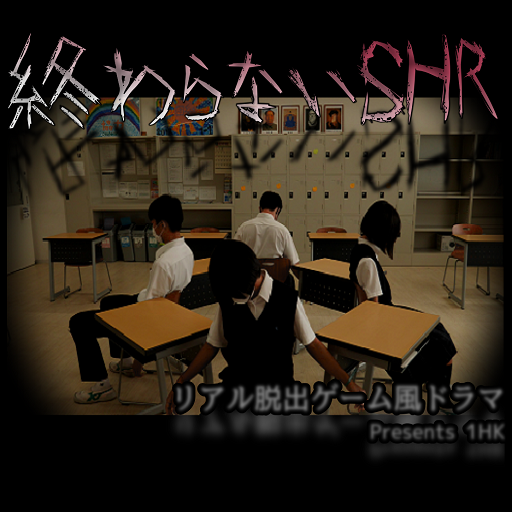
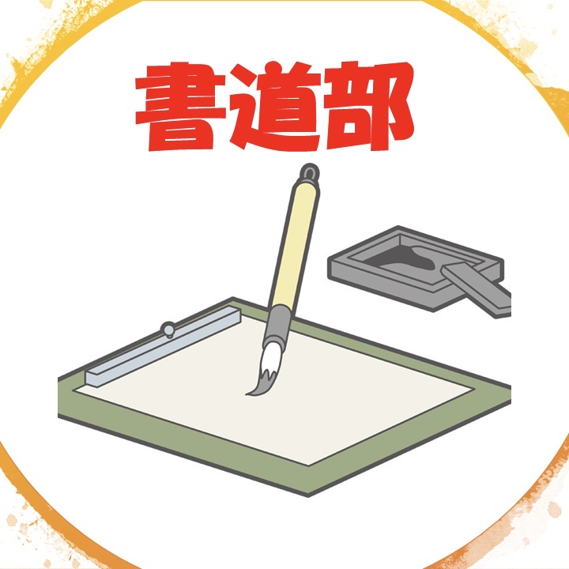
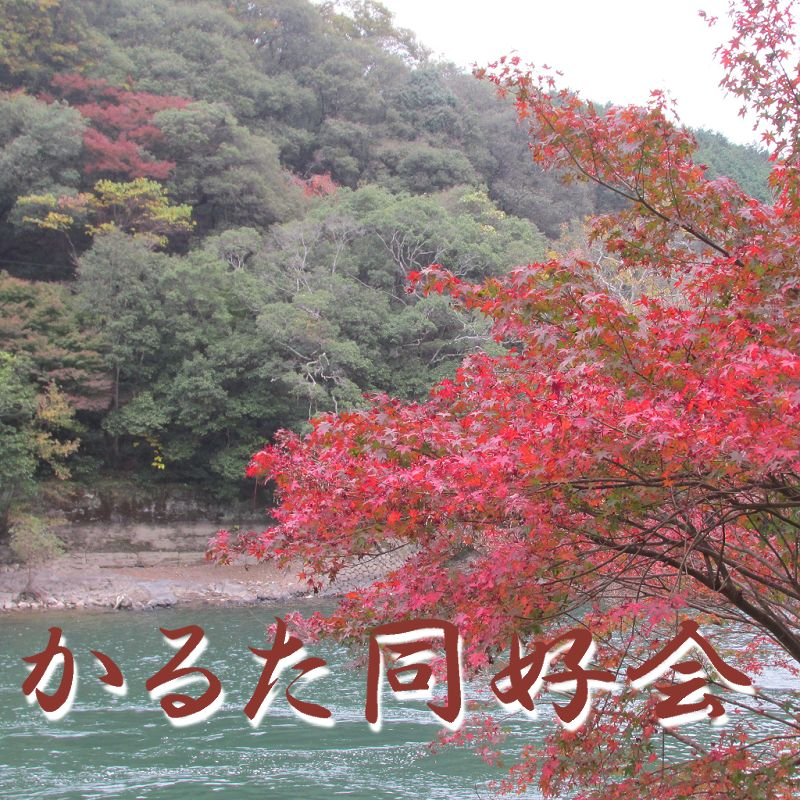
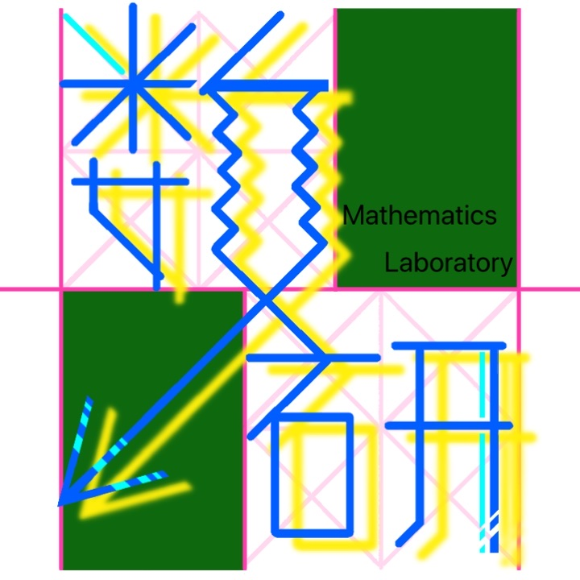
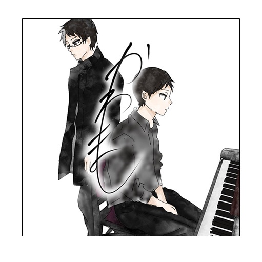
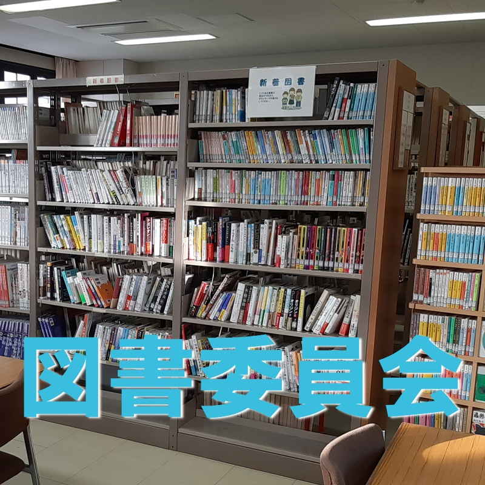

出展団体一覧

生徒会
ドミノ企画
今回、私たち生徒会はドミノ企画ということで9名の生徒会役員とボランティアとして参加してくださった方たちとともに、なんと、100メートルのドミノを作ります！
果たしてドミノを通して何が浮かび上がるのかは、画面の前の皆様の目でお確かめください。
コロナでたまった不安やイライラなどをすべてドミノ倒しにしてしまいましょう。
どうぞお楽しみに！
果たしてドミノを通して何が浮かび上がるのかは、画面の前の皆様の目でお確かめください。
コロナでたまった不安やイライラなどをすべてドミノ倒しにしてしまいましょう。
どうぞお楽しみに！

生徒会
クラス動画コンテスト
各クラスで、「SDGs紹介」または「学校紹介」のどちらかを選択し動画を制作します。
選考過程を経て、五峯祭当日に最優秀賞1クラス、優秀賞2クラスが決定します。
選考過程を経て、五峯祭当日に最優秀賞1クラス、優秀賞2クラスが決定します。

中学校
合唱
いきものがかりの「ありがとう」を歌いました。
例年とは違い、３密を避けての練習だったので苦労しましたが、最後には別々にリモートで歌った全員の声を合わせることができました。
ぜひ聴いてみてください。

（高3）食物調理コース
食物調理コースが
異文化料理を作ってみた！！
異文化料理を作ってみた！！
食物調理コースは毎年五峯祭で、異文化料理を出店しています。各国出身の方を講師に招き、本場の味を再現するため毎年好評をいただいています。しかし今年は残念ながらみなさんに食べていただくことができないため、代わりに『異文化料理・傑作選』をお届けします。
過去に出店した中で特に人気の高かった４か国の料理を、家庭でも簡単に作れるようにアレンジして、レシピ動画にまとめました！
なかなか旅行に行けない時期ですが、世界の料理を食べて海外旅行気分を味わってみてはいかがでしょうか？
過去に出店した中で特に人気の高かった４か国の料理を、家庭でも簡単に作れるようにアレンジして、レシピ動画にまとめました！
なかなか旅行に行けない時期ですが、世界の料理を食べて海外旅行気分を味わってみてはいかがでしょうか？

2年G組
KGピタゴラス
みなさんこんにちは！
私達2年G組は、この五峯祭に向けて有志で企画・運営をしました。
ネット上で行う初めての五峯祭、70%の生命エネルギーを注ぎ込んでひとつの動画にしました！ ぜひぜひ、ご覧くださいませ。
私達2年G組は、この五峯祭に向けて有志で企画・運営をしました。
ネット上で行う初めての五峯祭、70%の生命エネルギーを注ぎ込んでひとつの動画にしました！ ぜひぜひ、ご覧くださいませ。

1年H・K組
「終わらないSHR」
（リアル脱出ゲーム風ドラマ）
（リアル脱出ゲーム風ドラマ）
吹奏楽部
いわたとゆかいな仲間たち
団体紹介
皆さんこんにちは 国際学院吹奏楽部です！私たちは中学生3人、高校生5人で活動しています！
このご時世、なかなか練習時間が取れませんでしたが短い時間で効率よく練習しました！
出展概要
誰もが知っているあの有名なポップス曲をメドレー形式で演奏します。イヤホン推奨！ MVにも注目！


書道部 feat.軽音楽部
パフォーマンス書道
文芸同好会
イラスト＆創作短編

かるた同好会
おすすめの一首
みなさんこんにちは。
私たちかるた同好会は普段は大会に向けてかるたの練習をしています。
今回、五峯祭に向けて、小倉百人一首の中からお気に入りの一首を選び、それをイラストで紹介し、実際に詠んでみました。
一人でも多くの方に百人一首の魅力を知っていただければ幸いです。
私たちかるた同好会は普段は大会に向けてかるたの練習をしています。
今回、五峯祭に向けて、小倉百人一首の中からお気に入りの一首を選び、それをイラストで紹介し、実際に詠んでみました。
一人でも多くの方に百人一首の魅力を知っていただければ幸いです。

私たち数学研究室は、問題やゲーム、プログラミング等、色々な角度から、数学を「研究」しています。
数学研究室
数学研究室
団体紹介
みなさんこんにちは！私たち数学研究室は、問題やゲーム、プログラミング等、色々な角度から、数学を「研究」しています。
出展概要
小中学生も楽しく学べる数学の動画や、プログラミングを作成しました。

企画ステージ
かわまし
こんにちは！かわましです。
自粛期間にお互い練習を積み、ストリートピアノ等で調整を行って五峯祭を迎えました。
今回は、
出来は別として、精一杯撮影したので、聞いていただけると幸いです！
自粛期間にお互い練習を積み、ストリートピアノ等で調整を行って五峯祭を迎えました。
今回は、
- ルパン三世VS名探偵コナン〜テーマ〜
- 白日〜アレンジ〜
- Only my Railgun
- 残酷な天使のテーゼ〜アレンジ〜
- 夜に駆ける〜即興〜
出来は別として、精一杯撮影したので、聞いていただけると幸いです！

図書委員会
図書委員によるおすすめ図書のPOP展示
私たち図書委員会では例年、五峯祭でPOPを展示し、おすすめ図書を紹介しています。
今年度の五峯祭でもオンラインでPOP展示を行いました。
今年度の五峯祭でもオンラインでPOP展示を行いました。